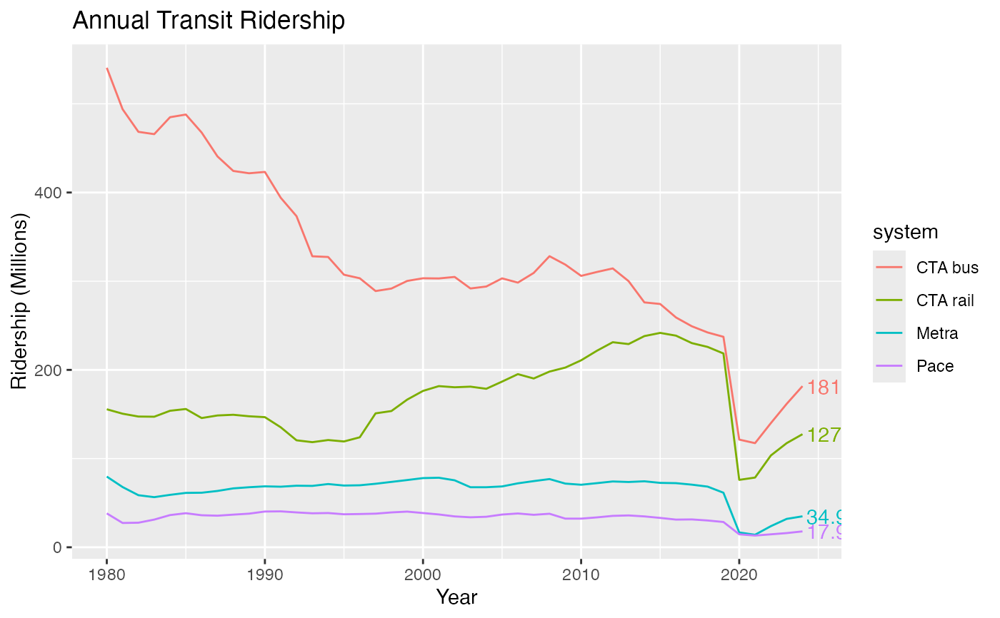

Label only the last point(s) on a plot. geom_text_lastonly_repel() can be
used instead of ggplot2::geom_text() when only the last point(s)
should be labeled. This is accomplished by identifying the maximum value of
x in data and applying a filter to omit records where x
is less than the maximum.
geom_text_lastonly_repel(
mapping = NULL,
data = NULL,
stat = "identity",
position = NULL,
parse = FALSE,
box.padding = 0.25,
point.padding = 1e-06,
min.segment.length = 0.5,
arrow = NULL,
force = 1,
force_pull = 1,
max.time = 0.5,
max.iter = 10000,
max.overlaps = getOption("ggrepel.max.overlaps", default = 10),
nudge_x = 0.4,
nudge_y = 0,
xlim = c(NA, NA),
ylim = c(NA, NA),
na.rm = FALSE,
check_overlap = FALSE,
direction = c("y", "x", "both"),
seed = NA,
verbose = FALSE,
show.legend = FALSE,
inherit.aes = TRUE,
add_points = FALSE,
text_aes = NULL,
point_aes = NULL,
...
)Set of aesthetic mappings created by aes or
aes_. If specified and inherit.aes = TRUE (the
default), is combined with the default mapping at the top level of the
plot. You only need to supply mapping if there isn't a mapping
defined for the plot.
A data frame. If specified, overrides the default data frame defined at the top level of the plot.
The statistical transformation to use on the data for this layer, as a string.
Position adjustment, either as a string, or the result of a call to a position adjustment function.
If TRUE, the labels will be parsed into expressions and displayed as described in ?plotmath
Amount of padding around bounding box, as unit or number.
Defaults to 0.25. (Default unit is lines, but other units can be specified
by passing unit(x, "units")).
Amount of padding around labeled point, as unit or
number. Defaults to 0. (Default unit is lines, but other units can be
specified by passing unit(x, "units")).
Skip drawing segments shorter than this, as unit or
number. Defaults to 0.5. (Default unit is lines, but other units can be
specified by passing unit(x, "units")).
specification for arrow heads, as created by arrow
Force of repulsion between overlapping text labels. Defaults to 1.
Force of attraction between a text label and its corresponding data point. Defaults to 1.
Maximum number of seconds to try to resolve overlaps. Defaults to 0.5.
Maximum number of iterations to try to resolve overlaps. Defaults to 10000.
Exclude text labels when they overlap too many other things. For each text label, we count how many other text labels or other data points it overlaps, and exclude the text label if it has too many overlaps. Defaults to 10.
Horizontal and vertical adjustments to nudge the
starting position of each text label. The units for nudge_x and
nudge_y are the same as for the data units on the x-axis and y-axis.
Limits for the x and y axes. Text labels will be constrained to these limits. By default, text labels are constrained to the entire plot area.
If FALSE (the default), removes missing values with
a warning. If TRUE silently removes missing values.
"both", "x", or "y" – direction in which to adjust position of labels
Random seed passed to set.seed. Defaults to
NA, which means that set.seed will not be called.
If TRUE, some diagnostics of the repel algorithm are printed
logical. Should this layer be included in the legends?
NA, the default, includes if any aesthetics are mapped.
FALSE never includes, and TRUE always includes.
If FALSE, overrides the default aesthetics,
rather than combining with them. This is most useful for helper functions
that define both data and aesthetics and shouldn't inherit behaviour from
the default plot specification, e.g. borders.
If TRUE, points will be added to the plot (for the
labeled data only). Default size=2, color will match line color.
Named list, additional aesthetics to send to the text and point geoms, respectively.
Additional aesthetics to send to BOTH the point and text geoms.
Note that if add_points = FALSE, additional parameters can be passed
to the text geom here, rather than in text_aes, without breaking.
Labels are placed by default to the right of the final point, and may be partially cut off by the plot limits. There are two known ways to address this:
Turn off panel clipping, e.g. with
coord_cartesian(clip = "off"). Substitute the correct coordinate
system for your plot–all have a clip argument available. Note that
this will allow all geoms in the plot to draw outside the panel area, which
may have unintended consequences.
Manually expand the x scale,
e.g. with scale_x_continuous(expand=expand_scale(mult=0.10)) or
coord_cartesian(xlim = c(min, max)).
Code was mostly copied from the source of ggrepel::geom_text_repel() and
ggplot2::geom_point().
library(tidyverse)
#> ── Attaching core tidyverse packages ──────────────────────── tidyverse 2.0.0 ──
#> ✔ dplyr 1.1.4 ✔ readr 2.1.5
#> ✔ forcats 1.0.0 ✔ stringr 1.5.1
#> ✔ lubridate 1.9.4 ✔ tibble 3.3.0
#> ✔ purrr 1.1.0 ✔ tidyr 1.3.1
#> ── Conflicts ────────────────────────────────────────── tidyverse_conflicts() ──
#> ✖ dplyr::filter() masks stats::filter()
#> ✖ dplyr::lag() masks stats::lag()
#> ℹ Use the conflicted package (<http://conflicted.r-lib.org/>) to force all conflicts to become errors
df <- transit_ridership %>%
filter(system != "pace_ada") %>%
mutate(system = recode_factor(system,
cta_bus = "CTA bus",
cta_rail = "CTA rail",
metra = "Metra",
pace = "Pace"))
# Without points, label formatting or x-axis expansion
ggplot(df, aes(x = year, y = ridership, color = system)) +
geom_line() +
labs(title = "Annual Transit Ridership") +
scale_y_continuous("Ridership (Millions)") +
scale_x_continuous("Year") +
geom_text_lastonly()
